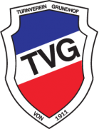

Vereine der SG
🏆 TSV Husby
📍 Dorfstraße 13, 24975 Husby
📞 04634 93306
✉️ info@tsvhusby.de
Turn- und Sportverein Husby von 1921 e.V. Der TSV Husby ist ein traditionsreicher Sportverein im Herzen von Husby, Schleswig-Flensburg. Seit über 100 Jahren stehen hier sportliche Gemeinschaft und Teamgeist im Mittelpunkt. Mit Fußball-, Tennis- und vielen weiteren Sportarten bietet der Verein Sport für Kinder, Jugendliche und Erwachsene jeden Alters. Besonders die Tennisabteilung mit mehreren Mannschaften ist überregional aktiv und richtet regelmäßig Turniere aus.

🤝 TSV Hürup
📍 Turn- und Sportverein Hürup von 1912 e.V.
📞
✉️
Der TSV Hürup ist ein lokaler Mehrspartenverein mit langer Tradition (seit 1912). Er bietet neben klassischem Fußball auch Angebote für Handball, Tischtennis, Kinder- und Jugendtraining sowie gesellige Vereinsaktionen. Besonders der Jugendausschuss ist sehr aktiv und organisiert regelmäßig Veranstaltungen für alle Altersgruppen. Der Verein gilt als familiäre Gemeinschaft, in der Sport, Spaß und gesellschaftliches Engagement Hand in Hand gehen – ideal für Familien und Sportbegeisterte aus der gesamten Region.

💚 TV Grundhof
📍 An der Nordstraße 4, 24989 Dollerup
📞 04636 979549
✉️ info@tvgrundhof.de
Der TV Grundhof ist ein vielseitiger Sportverein aus Dollerup in der schönen Region Angeln. Seit über einem Jahrhundert steht er für ein breites Sport- und Freizeitangebot: von Fußball und Tennis über Turnen und Fitness bis hin zu kreativen Kursen wie Aqua-Fitness oder Yoga – hier ist für jede Altersgruppe etwas dabei. Ein besonderes Merkmal des Vereins ist seine vielfältige Jugendarbeit und das motto „Grün. Weiß. Bunt!“, das für ein offenes, inklusives Vereinsleben steht.
